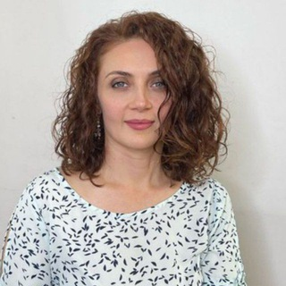

Для предпринимателей и экспертов · онлайн
Вы делаете всё, что нужно, а доход не растёт?
Помогаю найти внутренние причины, которые держат ваш доход, и собрать стратегию роста именно под вас.
Фатима Батчаева, коуч, психолог, терапевт души. Автор программы «Твоя точка роста».
Онлайн, без обязательств

Узнаёте себя?
Бывает такое
- Вы встаёте рано, работаете много, а доход застыл на одном уровне уже который месяц.
- Вы не поднимаете цены: боитесь потерять клиентов или думаете, что «ещё не эксперт».
- Вы пишете сильное предложение, но стесняетесь отправить его с высокой ценой.
- Запуск откладывается, потому что продукт «ещё сырой» и «надо доработать».
- Вы годами хотите начать своё дело, но каждый раз что-то останавливает.
- Вы заняты с утра до вечера, а денег не прибавляется.
Если вы узнали себя, дело не в лени и не в слабой воле. Чаще всего потолок дохода стоит во внутренних установках и стратегии, и с этим можно работать.
Для кого и кто ведёт
Работаю с теми, кто хочет вырасти в доходе
Я коуч, психолог и терапевт души. В работе соединяю коучинг, психологию, психосоматику и терапию души. Я структурный человек, поэтому причинно-следственные связи для меня основа: мы ищем причину, а не просто снимаем симптомы.
Моя задача — показать, что есть другой путь: не через страдание и жёсткую самодисциплину, а через понимание, принятие, смелость и уважение к себе. Чтобы «и волки были сыты, и овцы целы».
Владельцам своего дела
Доход упёрся в потолок, а вокруг хаос. Находим, что именно держит рост, и меняем это.
Экспертам
Вы сильны в профессии, но цены занижены, а продавать себя неловко. Возвращаем уверенность и ценность.
Тем, кто только начинает
Начали свой путь, но результата нет. Находим, что мешает, и собираем рабочую модель.
Тем, кто не решается
Давно хотите своё дело, но что-то держит. Разбираем страхи и делаем первый шаг без давления.
Программа
«Твоя точка роста»: три рычага вашего дохода
На реализацию и доход влияет много факторов. Выделить можно три главных, с ними и работаем.
Личные качества
Усиливаем то, на чём стоит ваше дело: харизму, мотивацию, опору, ответственность. Харизма не про «быть ярче и громче», а про то, чтобы не прятать себя настоящего.
Мышление
Выявляем и убираем ментальные программы, которые мешают росту дохода: страх не справиться, перфекционизм, обесценивание себя, привычку «быть маленьким».
Стратегии
Находим именно вашу модель реализации, которая подходит вам и вашему делу. Не чужой шаблон, а путь, по которому вам действительно хочется идти.
Флагманская программа
Твоя точка роста
Индивидуальная работа над доходом и реализацией: качества, мышление, стратегия. Формат и сроки обсуждаем на бесплатной диагностике, после неё вы решаете, подходит ли вам такой путь.
Результат у каждого свой и зависит от вашей включённости: конкретную сумму дохода не обещаю.
Начать с диагностикиПервый шаг
Бесплатная диагностика вашей реализации и доходов
Это возможность увидеть своё состояние со стороны и понять, каковы ваши истинные возможности. Без обязательств и без давления.
- Расскажете о своей ситуации в бизнесе или профессии так, как есть.
- Увидите, что именно сейчас держит ваш доход: качества, мышление или стратегия.
- Поймёте, нужна ли вам дальнейшая работа и какой формат подойдёт именно вам.
Онлайн, в удобное для вас время
Как это устроено
Три простых шага
Оставляете заявку
Достаточно имени, контакта и пары слов о вашей ситуации. Я отвечу лично.
Диагностика
Онлайн-встреча, на которой мы смотрим на вашу реализацию и доходы и находим, что держит рост.
Решаете сами
Если захотите продолжить, начнём программу «Твоя точка роста». Если нет, вы просто унесёте ясность.
Попробуйте прямо сейчас
Серия практик «самотерапия и самокоучинг»
Выкладываю их в своём Telegram-канале. Это бережный способ познакомиться с моим подходом, ничего не оплачивая.
«Наблюдение»
Помогает увидеть себя со стороны и осознать свои реакции во взаимодействии с другими людьми.
«3 секунды»
Учит реагировать осознанно в моменте, а не эмоционально и импульсивно.
«Выпускаем эмоции»
Показывает связь души, ума и тела и помогает освободить тело от лишних эмоций.
Частые вопросы
Сомнения, которые нормальны
У меня проблема с дисциплиной, разве не в этом дело?
Чаще всего нет. Дисциплина отвечает за то, как вы двигаетесь, а психология за то, куда и почему вы стоите на месте. Если вы встаёте рано и работаете много, а доход не растёт, причину стоит искать в установках и стратегии, а не в силе воли.
Это коучинг или психология?
И то, и другое. Я соединяю коучинг, психологию, психосоматику и терапию души. Мы ищем причины, а не только ставим цели, и одновременно выстраиваем конкретную стратегию. Это не медицинская помощь и не заменяет лечение.
У меня ещё нет своего дела. Мне подойдёт?
Да. Программа в том числе для тех, кто давно хочет начать и не решается, и для тех, кто начал, но результата пока нет. На диагностике мы посмотрим, что останавливает именно вас.
150 000 ₽ — как понять, что это окупится?
Поэтому первый шаг бесплатный: вы сначала увидите, что держит ваш доход, и только потом решите, нужна ли программа. Конкретный рост дохода я не обещаю: результат зависит от вашей включённости, ниши и стартовой точки. Обещаю честный разбор и работу над причинами.
Что такое «терапия души» и зачем она в вопросах дохода?
Часто мы упираемся не во внешние обстоятельства, а в глубинные решения и страхи: «большие деньги — большие проблемы», «я ещё не эксперт». Терапия души помогает до них добраться и снять, и тогда стратегии начинают работать.
Не будет ли это «позитивным мышлением» и аффирмациями?
Нет. Я работаю структурно: от причин к следствиям. Мы находим конкретные программы, которые мешают, и конкретные шаги, которые вы можете сделать. Образы, притчи и истории помогают сдвинуть застывшие убеждения, но опора всегда на ваш запрос и реальные действия.
Как проходит работа и где?
Диагностика и работа проходят онлайн, из любого города, в удобное для вас время.
Запись
Расскажите, что у вас с доходом
Можно одной фразой. Я прочитаю сама и отвечу лично, без давления. Всё, что вы напишете, останется между нами.
Вы уже сделали важный шаг: заметили, что можете больше. Следующий совсем небольшой.
Или напишите сразу в Telegram: @fatumba1974